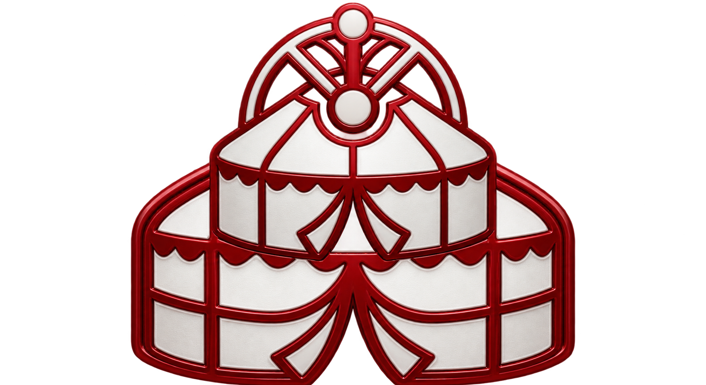

Türk Kültür, Sanat, Tarih ve Kıraathane Portalı
Geleneksel ahşap ıstakanızda taşları serilere veya çiftlere dizin. Desteden veya yandan taş çekin, seçili taşa çift tıklayarak ıskartaya atın!
Geleneksel sedef kakmalı ceviz tavla tahtası üzerinde bilgisayara karşı oynayın. Zar atın, pullarınızı ilerletip kapıları tutun, açık pulları kırın ve 15 pulunuzu toplayarak maçı kazanın!
BOŞLUK tuşuna veya hedefe basılı tutarak yayı gerin, rüzgarı hesaba katıp oku fırlatın ve puta hedefinin tam ortasındaki gözü vurun!
Nişan için oyun alanına dokunup/fareyle hareket edin; basılı tutarak kuvveti ayarlayın, bırakınca atış yapılır. Mobilde de çalışır.
Renkleri seçin, tekneye boya bırakın; biz, tarak ve geleneksel motiflerle deseninizi işleyin. Çiziminiz tarayıcıda kalır, isterseniz PNG olarak indirebilirsiniz.
Ney'in derin nefesini, bağlamanın tezenesini, kanunun mandallarını ve kudümün vuruşlarını tarayıcınızda hissedin.
Perdelere tıklayarak ney üfleyin:
Gümüş mandallı tellere dokunun:
Telleri mızraplayın veya usul vurun:
Türkçe harfleri Orhun alfabesindeki yaklaşık ses karşılıklarıyla gösterin veya tamgalardan Latin harflerine yaklaşık okuma alın.
Anadolu'nun bereketli coğrafyasında binlerce yıllık medeniyetleri, yöresel lezzetleri ve halk kültürünü keşfedin.
Üç imparatorluğa başkentlik yapmış payitaht İstanbul, Osmanlı'nın ilk başkentleri Bursa ve Edirne ile kadim bir tarih beşiği.
Ayasofya-i Kebir Camii, Topkapı Sarayı, Selimiye Camii, Bursa Ulu Camii, Truva
Bursa İskender Kebabı, Edirne Ciğeri, Peynir Helvası, Tekirdağ Köftesi
Kırkpınar Yağlı Güreşleri, İznik Çinisi, Karagöz & Hacivat Gölge Oyunu, Boğaz Kültürü
Asya bozkırlarından Avrupa'nın içlerine, çağ açıp çağ kapatan ulu hakanlar, sultanlar ve Cumhurbaşkanları.
Anlamları ve konu başlıklarıyla genişletilmiş atasözü arşivi.
Atasözü arşivi yükleniyor…
Atasözünü oku, doğru anlamı seç. Her doğru cevap 10 puan.
Masanın şampiyonu oldunuz! Ali Dayı, Mehmet Usta ve Hasan Amca çayları ısmarlıyor! ☕🎉